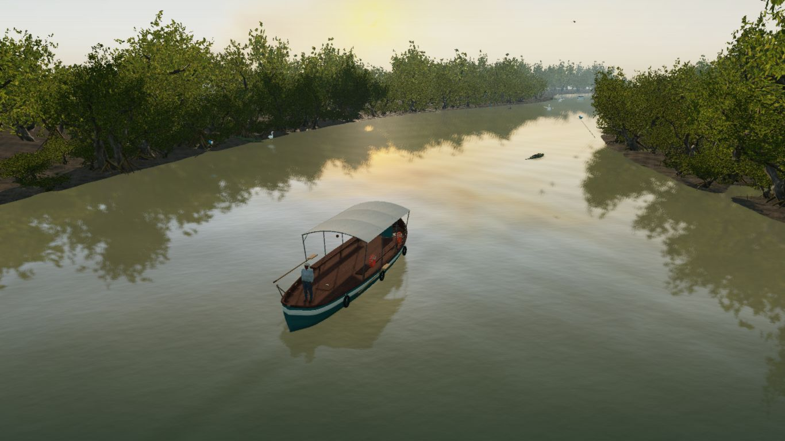
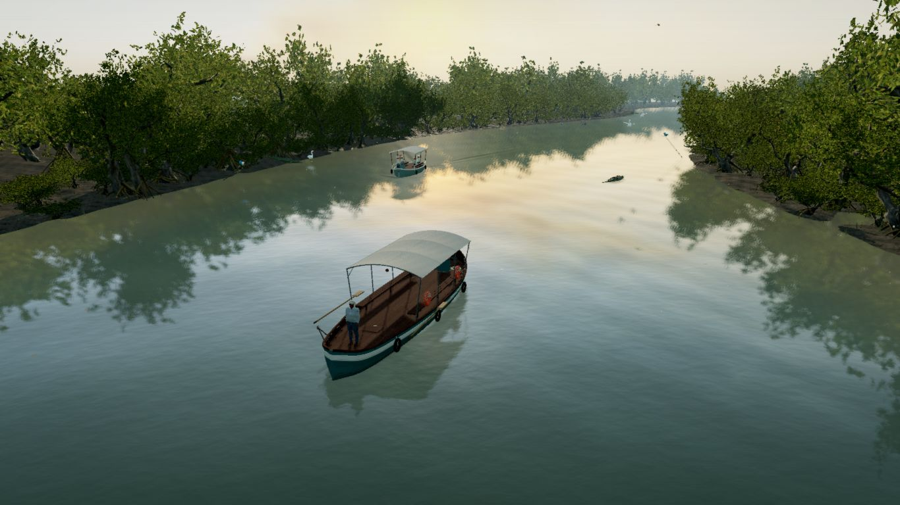
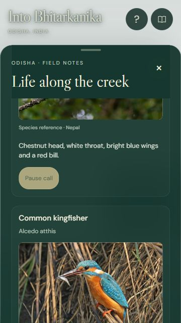
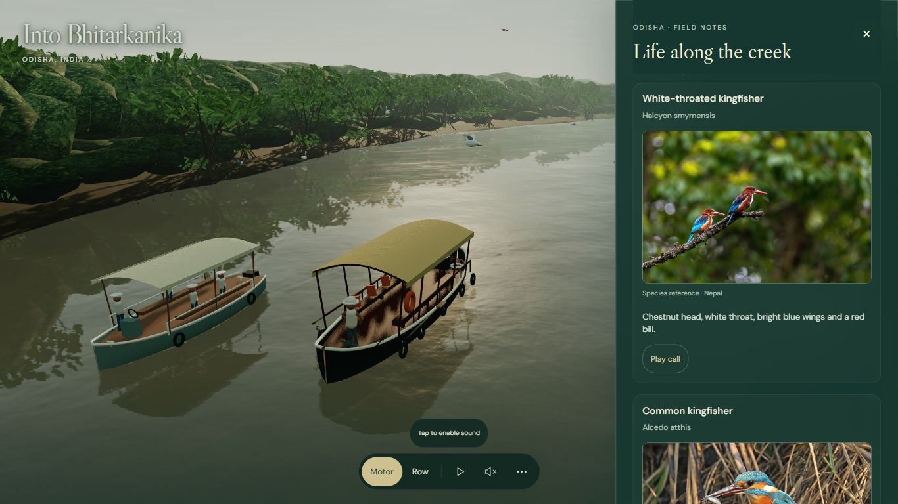

Into Bhitarkanika
Local cinematic and adaptive interface review. Painterly-realistic nature-film direction. No new external assets.

Before · preserved September build
After · local October buildSame 1366 × 768 drawing buffer, camera, boat position and simulation time. Traffic and wildlife can differ because the original simulation retains their state. Standard geometry, materials and controls retain their existing behavior.
| 1366 × 768 | Before (repeat) | High Auto / Quality | High Performance |
|---|
| Mean frame time | 40.2 ms | 33.6 ms | 30.9 ms |
| Average frame rate | 24.9 fps | 29.7 fps | 32.4 fps |
| Draw calls / frame | 1,660 | 1,099 | 944 |
| Triangles / frame | 11.93 M | 8.71 M | 7.68 M |
| CPU submission | 21.1 ms | 22.5 ms | 23.6 ms |
| First High preparation | 29.9 s | 30.6 s | Same cached scene |
Measured on this computer's integrated AMD Radeon GPU. CPU timing includes instrumentation and browser variability; no CPU-submission or initial-load speedup is claimed. Initial cold baseline (13.4 fps) was excluded. See the report for sampling limits.Adaptive interface

Species cards and explicit audio playback
Desktop drawer · scene rendering pauses while open